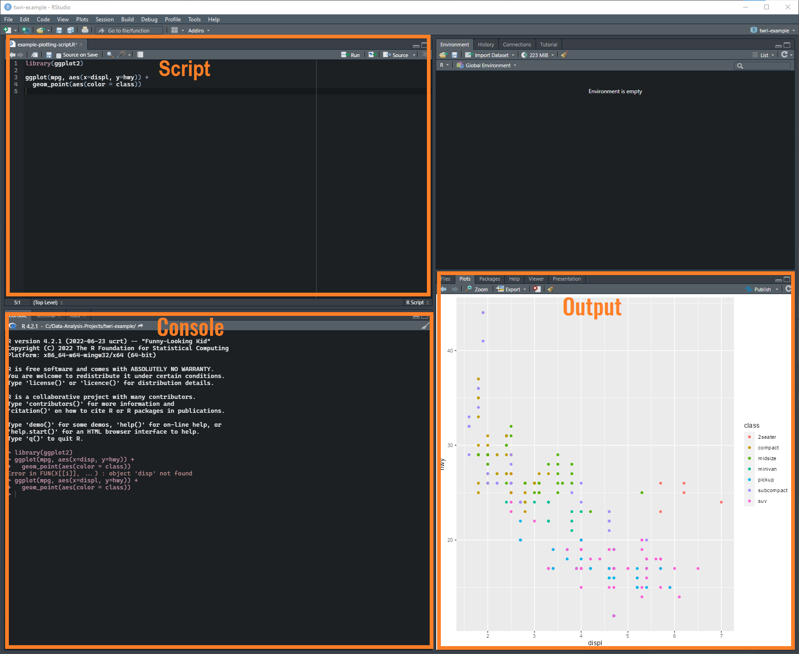

Project Folder
|
|-- Data
| |
| |-- Raw Data
| |-- More Raw Data
|
|-- Scripts
| |
| |-- Analysis.R file
| |-- Figures.R file
|
|-- Figures
| |
| |-- Plot
| |-- Another figure
|
|-- Exported Data
| |
| |-- Results
|
|--- Reports
| |
| |-- Report
|
|- Readme file (usually .Rmd, .md, or .txt file)
1 Fundamentals
1.1 Project-oriented workflow
Note
This subsection is largely based on Jenny Bryan’s What They Forgot (WTF) to Teach You About R.
1 - Organize your work into a project. This means within the file system store all your data, code, figures, notes, and related material within the same folder and subfolders.
2 - RStudio Projects enforces this approach. When you create a new project in RStudio, it creates a folder with some metadata and user options for that specific project (stored in the .Rproj file inside the folder it created for the project).
3 - RStudio Projects establish a working directory and use relative file paths by default. Usually this is what you want so when you share a project or move it from one computer to the next, it. just. works. This is also why it is critical to store your data and scripts within the project.
A typical project might have a file and folder structure like this:
1.1.1 Your RStudio Project
Start a new project! Open RStudio, in the upper left click “File” -> “New Project.” We generally want to start a project in a New Directory, so click that. One the next window click New Project. Now you can choose the subdirectory name of your project (folder name) followed by where you want that subdirectory to be stored. Click “Create Project” and RStudio create the subdirectory and puts a .Rproj file with specific project info in there for you.

The RStudio workspace includes 3 major components. In the upper left, the script area shows the content of open R scripts (or any text based file that you open will show up here). You can edit, save, and run lines of code from this window.
At the bottom left, is the R console. This is where R operates. The code you wrote in the script gets loaded into the console and R does whatever is in the script. Output, messages, and warnings from your R code will probably show up here.
At the bottom right, are a couple of tabs. This is where graphical outputs are displayed. There are also tabs for files, packages, and help. The file tab lets you navigate, create, delete, and open files and folders. It defaults to your projects working directory. The packages tab is for exploring the packages you have installed, more on that below. Technically you can load and unload packages from here by clicking boxes next to each package. Don’t do that. The help tab is just that, it lets you search functions in each package and displays the documentation for packages and functions. Learn to use this tab, it will help you just like it says!
1.1.2 Running Code
You should generally write your code in the script window and execute it from there. This will save you from retyping code again and again.
If you have your cursor on an expression in your R script, use the keyboard shortcut: Ctrl+Enter to execute that expression. The cursor will automatically move to the next statement and the code will run in the console. If you want to execute the entire script at once, use the keyboard shortcut: Ctrl+Shift+S.
1.1.3 Basic coding
Boxes with the grey background and blue vertical bar indicate chunks of R code. If there is an output when that code chunk is run by R, the output (text output, tables or figures) will follow directly below the chunk. For example, here is a code chunk:
10*100And this is the output:
[1] 1000
Note
Much of this subsection is from R for Data Science which you are encouraged to explore.
This: <-, is called an assignment operator in R. We use it to create objects by assigning a value to a variable name. We name objects so we can easily refer to whatever you assigned later on in your script:
x <- 10
y <- 100
x * y[1] 1000You don’t have to assign numbers:
x <- "Hello"
print(x)[1] "Hello"Assignment operators go either direction, you might find it useful to use the left to right assinment operator in some situations:
"Hello" -> x
print(x)[1] "Hello"However, for the most part, standard practice is to assign right to left so you can easily find the variable name receiving the value. Whatever you choose, use the same direction throughout your project.
As your scripts get more complicated, it is important to use descriptive object names. Object names can only contain letters, numbers, _, and ., so we recommend using “snake_case” to create object names:
streamflow
streamflow_site_aObject names are case sensitive, streamflow_site_a is not the same as streamflow_site_A.
The # symbol is ignored by R and used to include human readable comments in your script. Use comments liberally in your code.
## I can write what I want
## and R does not evaluate
## this
a <- 1
a1.2 More About Objects
Before diving to much into R programming it is worth becoming familiar with some of the basic types of object in R. Function arguments might only accept specific types of objects and return specific types of objects. Being able to identify object types is fundamental for troubleshooting errors. This is not an exhaustive list but commonly objects are one of:
- A single variable that can be character, double, integer, raw, logical, or complex eg:
x <- 1. -
Vectors are a one-dimensional set of homogeneous data types. Typically constructed using the
c()function:x <- c(1,2,3). -
Lists are similar to a vector but group together R objects. Lists can include different types of objects and are constructed using the
list()function:list_1 <- list(c(1,2,3,4,5), c("A", "B", "C"), list(TRUE, FALSE)). -
Data Frames are two-dimensional lists or more easily thought of as tabular data similar to a spreadsheet. The data frame represents a list of variables which have the same number of rows. Columns can be of differing types as long as they have the same number of rows. The data frame and its cousin the tibble are extensively used in data analysis workflows. Data frames are constructed with the
data.frame()function:df <- data.frame(x = c(1,2,3), y = c("a", "b", "c")).
There are a number of other object types that I won’t go into detail on. Matrices and arrays are multi-dimensional objects similar to matrices from linear algebra.
Most R objects have something called a class attribute. You can use the class() function to inspect any object:
class("Hello")[1] "character"df <- data.frame(x = c(1,2,3), y = c("a", "b", "c"))
class(df)[1] "data.frame"1.2.1 Factors
Factors are a way of storing categorical information in R. Factors often appear to be character objects, but R stores the information as levels and numbers which facilitates statistical modeling off categorical variables. Even if you won’t be modeling categorical variables, factors are valuable for storing the order to display information if that variable has some inherent order to it (something like drought category for example). Factors are created with the factor() function. When you use factor, R will recode the data as integers and store an additional attribute with the data called levels that stores the labels associated with an integer:
R orders these alphabetically by default. These makes sense if there is no other inherent ordering, but in this case we would probably want to order it something like: Easy, Medium, Hard. The use of this makes more sense once you start plotting or summarizing data into tables:
## shows the class and levels
attributes(difficulty)$levels
[1] "Easy" "Hard" "Medium"
$class
[1] "factor"## to reorder the levels:
levels(difficulty) <- c("Easy", "Medium", "Hard")
## or tell R the order when you make the factor
factor(c("Hard", "Easy", "Easy", "Medium", "Medium"),
levels = c("Easy", "Medium", "Hard"))[1] Hard Easy Easy Medium Medium
Levels: Easy Medium Hard1.2.2 Dates
There are specific classes for date and time objects in R. Use the Date class to represent dates in R using the as.Date() function. The character representation of Dates always defaults to "yyyy-mm-dd" format:
as.Date("2021-01-01")[1] "2021-01-01"If your date string is in a different format, you need to specify it in the format argument. The help documentation in the strptime() function provide details on how to specify the format, an example is shown for dates entered as "mm/dd/yyyy":
as.Date("01/01/2021",
format = "%m/%d/%Y")[1] "2021-01-01"We can subtract two dates and get a difftime object that tells us the difference in days:
Time difference of 1025 daysTime difference of 146.4286 weeksIf you have Date-Time strings, the POSIXct class is your friend. The default format is shown below and strptime() provides the details on how to specify different formats. The time recorded in your data probably depends on a timezone and might shift based on daylight savings time (or might not depending on the device collecting the data). Use the time zone argument to specify the time. If you are setting up a device to collect data that will be read into R, I highly recommend setting up the device to collect in UTC offset.1
1 See: https://en.wikipedia.org/wiki/List_of_UTC_offsets
as.POSIXct("2021-06-01 12:00:00", tz = "UTC")[1] "2021-06-01 12:00:00 UTC"## example of UTC offset format
as.POSIXct("2021-06-01 06:00:00 -0600",
format = "%Y-%m-%d %H:%M:%S %z",
tz = "UTC")[1] "2021-06-01 12:00:00 UTC"1.3 Functions
Functions are essentially tools that take input arguments and output some kind of value. Functions are the basis for most everything you do in R. For example, seq() is a function to generate a regular sequence of numbers. You can get to the help documentation by entering ?seq() in the console. It takes the arguments from, to, by, length.out, along.with. Use = for argument values:
seq(from = 0, to = 10, by = 2)[1] 0 2 4 6 8 10Writing your own functions is one of the reasons for using R. Here is a simplistic function that generates a message in the console screen depending on the condition of the first argument.
Hello!print_hello(x = 1)ByeWhy write a function in the first place? Sometimes you might need to repeatedly run the same set of functions on different data or subsets of data. You will find yourself copy and pasting code and changing some values within. If the output is dependent on some values you forgot to change when you cut and paste, instant problems! Functions let you skip that copy and paste action, and just update the arguments. Here is an example of some code to calculate the confidence interval around the mean for a vector of numbers:
min <- 0
max <- 10
n <- 1000
ci <- 0.95
x <- runif(n = n, min = min, max = max)
se <- sd(x)/sqrt(length(x))
alpha <- 1 - ci
mean(x) + se * qnorm(c(alpha/2, 1-alpha/2))[1] 4.925691 5.285134If we need to recalculate the confidence interval for different values or combinations of values of x, n, and ci we would have to cut and paste the chunk each time with the potential for data entry errors if the wrong values are entered. Instead, create a function and change the arguments as needed.
ci <- function(min, max, n, ci) {
x <- runif(n = n, min = min, max = max)
se <- sd(x)/sqrt(length(x))
alpha <- 1 - ci
mean(x) + se * qnorm(c(alpha/2, 1-alpha/2))
}
ci(min = 0, max = 10, n = 1000, ci = 0.95)[1] 4.714993 5.068229ci(min = 10, max = 100, n = 1000, ci = 0.90)[1] 52.94005 55.65136ci(min = 10, max = 1000, n = 1000, ci = 0.80)[1] 489.9881 513.00731.4 Packages
Packages might be considered the toolboxes of R. They are generally a collection of functions and classes the expand the capabilities of the base R functions. Many packages have dependencies from other packages. This mean when you install one package, you may end up installing multiple other packages automatically that are required for the package that you chose to work. Normally this works without hiccup. However, before installing packages, I suggest restarting your R session and make sure no packages are currently loaded to prevent issues.
Most packages can and should be installed from the CRAN repository. These are a network of repositories that host the official, up-to-date and approved packages for R. This packages are pre-built, meaning you are unlikely to run into issues on installation. To install packages from CRAN, you typically do something like the following:
## install one package
install.packages("ggplot2")
## install multiple packages
install.packages("dplyr", "tidyr")Sometimes you need a package or package version that is not currently available on CRAN. There are various justifiable reasons the packages might not be available on CRAN; however, one of the benefits of using CRAN packages is that they are all reviewed by a person before acceptance. This provides a safety mechanism for not only the quality of the package but potential security issues.
Note
If you are installing a package from GitHub or other source, please review it for safety and quality before installation.
There are two primary way to install non-CRAN packages. The preferred method is to install pre-built packages from an alternative repository like r-universe. The readme file associated with the package will generally inform you if the package is available on a different repository and how to install it from that repository.
An example of this is shown below for the adc package:
install.packages('adc', repos = c(txwri = 'https://txwri.r-universe.dev'))An alternative option is to download and build the packages from the source, such as GitHub. For those on Windows, you will need to install the RTools toolchain. Then, we can use the remotes package to download, build and install a package from GitHub:
install.packages("remotes")
remotes::install_github("mps9506/rATTAINS")After you install a package, you need to load the package in order to use the functions. Confusingly, you use the library() function to accomplish this. Standard practice is to load libraries at the top of your script:
1.5 Other Coding Conventions
1.5.1 Pipe Function
Many of the examples in this manual use something called the pipe function (either %>% or |> in newer versions of R). The pipe takes the output of a function and makes it the input of the next function without writing it to an object in the environment. The primary advantage of this is when you have many data processing steps in a row and you don’t want to write or overwrite an object at every step. In this manual we will use the |> function.
Here is a short example where we take the mean of a sample of numbers
## generate a numeric vector of randomly log normally distributed
## values whose mean log is 100
x <- rlnorm(100, meanlog = 100)
## calculate the mean of the log
mean(log(x))[1] 100.0328This is a little messy. If we had multiple steps this could make the code difficult to interprt. The pipe function separates this into steps. The code below pipes x into the first argument of log(), the output of log() is piped into the first argument of mean(). This delineates each step in the data workflow.
If it isn’t the first argument that needs the output from the previous function, we use the placeholder _. A good example is the function to fit a linear regresion, lm() which requires the regression formula as the first argument and data for the second argument. We generate vector of sample random predictor data (x) from a uniform distribution using runif(). A vector b of coefficents normally distributed around mean 10 is generated using rnorm(). The response is generated using x * b. The linear regression should return a coefficient for x that is near 10.
## generate a pretend response variable
x <- runif(100, min = 10, max = 100)
b <- rnorm(n = 100, mean = 10, sd = 2)
data.frame(x = x,
y = x * b) |>
## fit a regression model, notice the "_" placeholder
lm(y ~ x, data = _) |>
## return the regression summary
summary()
Call:
lm(formula = y ~ x, data = data.frame(x = x, y = x * b))
Residuals:
Min 1Q Median 3Q Max
-393.14 -74.48 15.60 61.39 290.33
Coefficients:
Estimate Std. Error t value Pr(>|t|)
(Intercept) -30.8483 26.7371 -1.154 0.251
x 10.3504 0.4626 22.376 <2e-16 ***
---
Signif. codes: 0 '***' 0.001 '**' 0.01 '*' 0.05 '.' 0.1 ' ' 1
Residual standard error: 115.5 on 98 degrees of freedom
Multiple R-squared: 0.8363, Adjusted R-squared: 0.8346
F-statistic: 500.7 on 1 and 98 DF, p-value: < 2.2e-161.6 Suggested RStudio Settings
Incomplete
I still need to add discussion on
- setting global and project options in RStudio
- using ragg graphics device (this might be better in figure section)